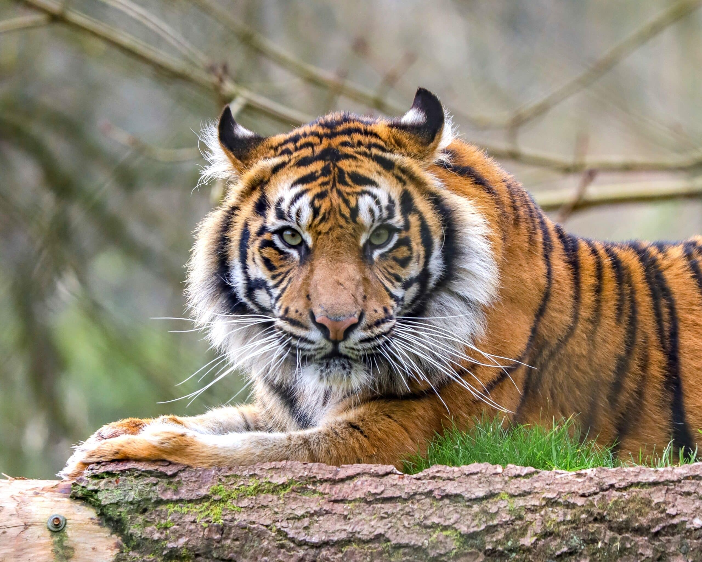
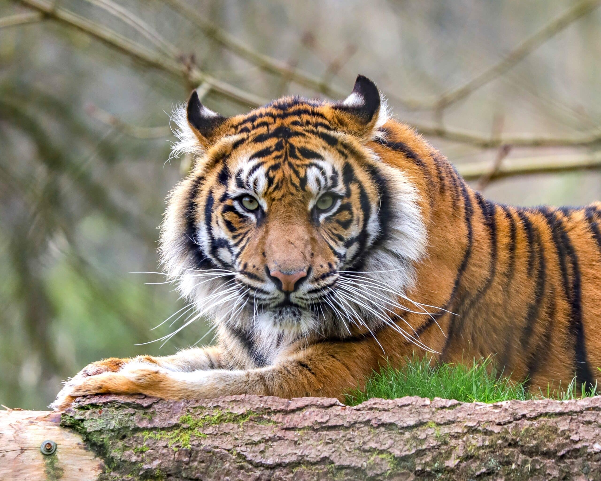

Očuvanje Životinja: Naša odgovornost
Svijet životinja suočava se s prijetnjama koje ugrožavaju mnoge vrste. Ljudske aktivnosti kao što su krčenje šuma, zagađenje i klimatske promjene uzrokuju nestanak mnogih životinja. Očuvanje ovih vrsta nije samo zadatak stručnjaka – to je odgovornost svih nas. Svaka životinja ima svoju ulogu u održavanju ravnoteže ekosustava, a gubitak vrsta može imati nepovratne posljedice.
 

| Vrsta | Status |
|---|---|
| Tigar | Ugrožen |
| Panda | U oporavku |
| Morska kornjača | Kritično ugrožena |
Kako možemo pomoći? Edukacijom, smanjenjem negativnog utjecaja na okoliš i podrškom organizacijama koje se bave zaštitom ugroženih vrsta. Naša akcija danas može osigurati bolju budućnost za naš planet i sve njegove stanovnike.